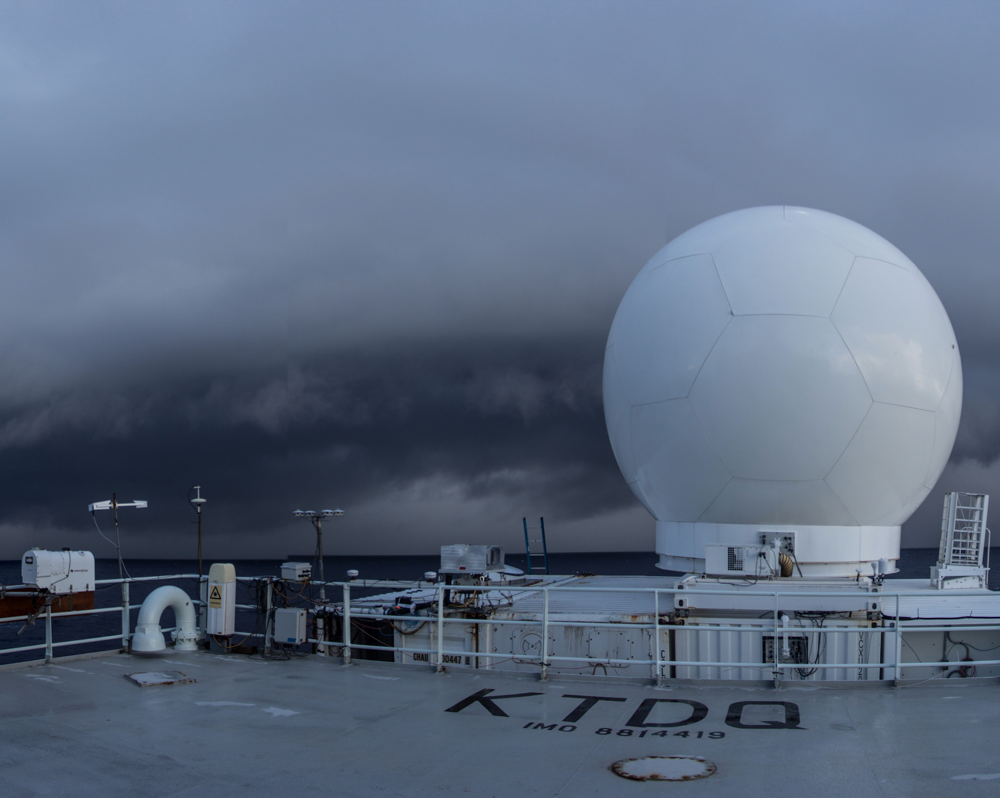

<div class="container" style="width:100% ">
  <div class="content" style="width:90%; margin-left: 5%;"">


    <!--  -->


    <p> The Colorado State University (CSU) Sea-Going Polarimetric (SEA-POL) radar was recently established as a National Science Foundation (NSF) community facility. </p>

    <p>The stabilization and rugged design of SEA-POL allow for research-grade accuracy of weather radar measurements on a ship in rough seas or strong winds on land that can probe the structure of clouds and precipitation.
    SEA-POL has already conducted four prior research cruises and has a planned island deployment during 2022. </p>

    <p>Numerous science opportunities are possible with a portable, 5-cm wavelength radar in atmospheric science including advances in tropical and mid-latitude weather, regional climate and climate change, cloud microphysics, dynamics of convective storms, and extreme weather impacts.
    SEA-POL can also contribute to interdisciplinary science in oceanography, hydrology, and water resources.

    <p> SEA-POL is managed jointly by the CSU Atmospheric Science and Electrical and Computer Engineering Departments to make the radar available for community requests for deployment in the U.S. and around the globe.
    Our effort will include education and outreach opportunities focused on the societal benefits of NSF-supported observations for better climate science and weather prediction. </p>


</div>
</div>
